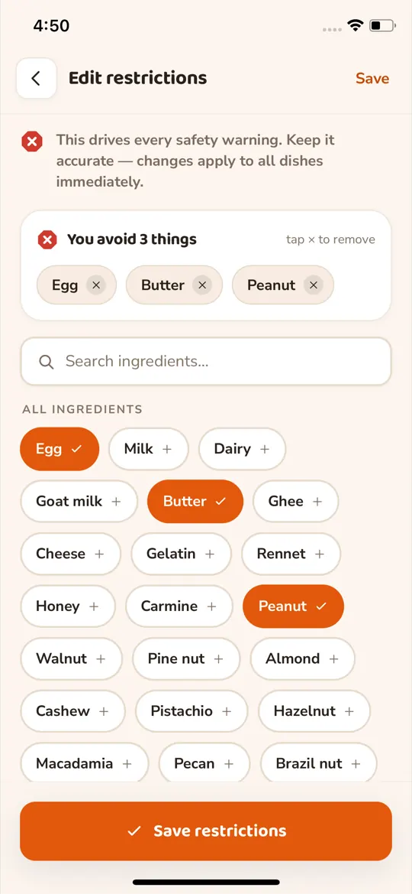
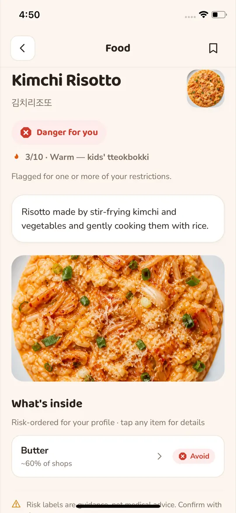
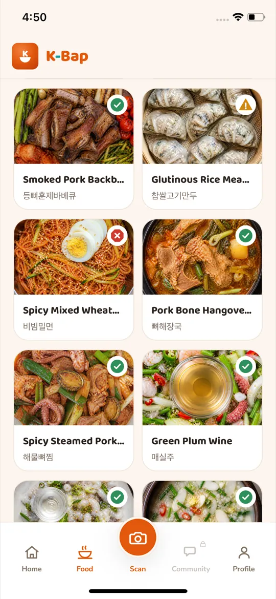
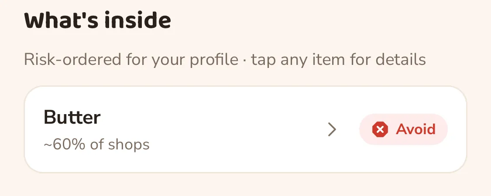
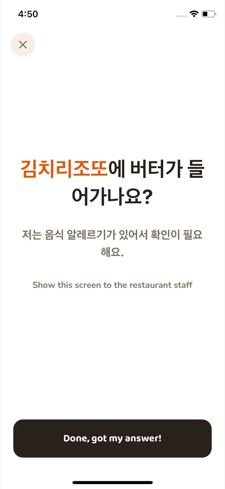
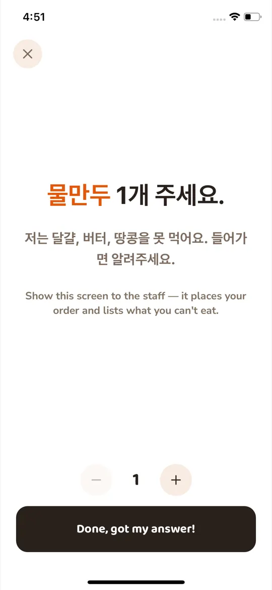
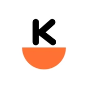

01
Scan a menu
One photo of a Korean menu. K-Bap reads the Korean, gives you each dish in your language, and rates it against the ingredients you avoid.
Point your camera at a Korean menu. Every dish comes back in your language, and the ones containing ingredients from your avoid list are marked.

Free. Browse as a guest, or sign up to have dishes rated against your own list.

The problem
You know what you can't eat, and the menu gives you no way to check. K-Bap reads the Korean and checks each dish against the ingredients you listed.
What the app does
01
One photo of a Korean menu. K-Bap reads the Korean, gives you each dish in your language, and rates it against the ingredients you avoid.
02
Tap what you skip, from peanut and butter to alcohol and shellfish. Fifteen presets, among them vegan, halal, kosher and gluten-free, fill the list in for you, and you can edit any entry afterwards.

03
Every dish carries one of four labels, worked out from the list you saved. Change the list and the ratings change with it.

04
Search Korean dishes by name or scroll the catalog. Each card carries the same rating a scanned dish would get.

05
Open a dish and its ingredients come back in risk order, each one labeled and marked with how often restaurants use it. Spice level sits at the top, on a scale of ten.

06
K-Bap writes the question, or the whole order, in Korean. Show the staff the screen and they read what you can't eat.


07
Read what other people made of a dish before you order it, and add your own once you've tried it.
08
Two lists on your profile: what you ordered and what you scanned. Useful when you want that dish again and can't remember the name.
How dishes are marked
Color alone is easy to miss, so each label carries its own shape.
Nothing from your avoid list turned up in this dish.
Recipes differ between restaurants, so ask before you order.
This dish contains something you listed as off-limits.
We can't rate this dish yet. Don't read that as safe. Ask the restaurant.
Languages
Dish names, ingredients and descriptions come back in whichever of these you pick.

Free on iPhone and Android.